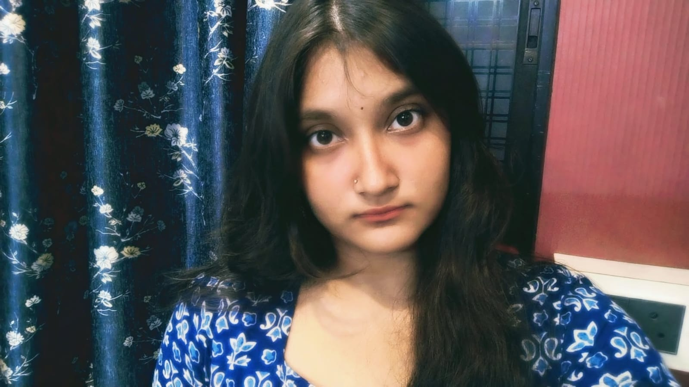

a little bit of me ✳THE PERSON BEHIND THE PROJECTS
Hey, I'm Kinjal.
A curious mind, a creative side, and a growing love for tech.
I'm a CST student exploring Data Science and Artificial Intelligence. I enjoy learning new things, experimenting with ideas, and turning what I learn into projects of my own.
Outside tech, I enjoy music, reading, writing, art, movies and series, and quiet time to recharge. There's always something new I'm curious about.
See what I'm building →